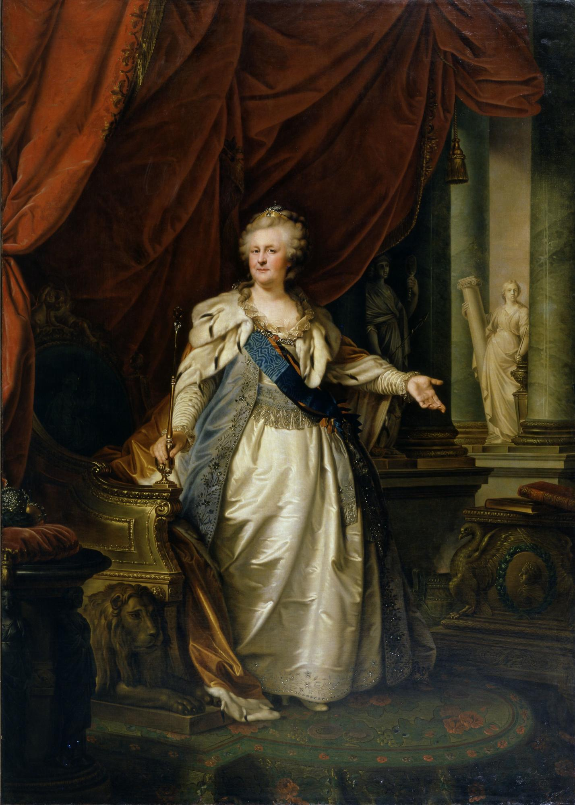

Немка по происхождению, при рождении Екатерина Вторая звалась Софией Августой Фредерикой. Да, вот такое вот длинное имя. Фамилия — Ангальт-Цербтская.
Она всегда рано вставала, в 5-6 часов утра.
Екатерина II любила читать. Её библиотека была огромна. Кроме того, она состояла в переписке со многими видными французскими писателями эпохи Просвещения.
Сохранились свидетельства, подтверждающие, что императрица писала по-русски с огромным количеством ошибок.
Императорский стол на один день стоил примерно в 12,5 раз больше, чем рядовой солдат получал за год.
За время правления Екатерины Великой годовой бюджет страны увеличился вчетверо.
Она любила вязать на спицах и вышивать по ткани, считая, что эти занятия способствуют умиротворению. В число прочих её хобби входили гравировка и резьба по кости и дереву.
Императрица хорошо играла в бильярд.
В течение всего срока, проведённого у власти, Екатерина II подписала лишь один приказ о смертной казни, касавшийся бунтовщика Емельяна Пугачёва.
Пышные платья со множеством драгоценностей она надевала только на выход. В повседневности же императрица предпочитала носить простую одежду.